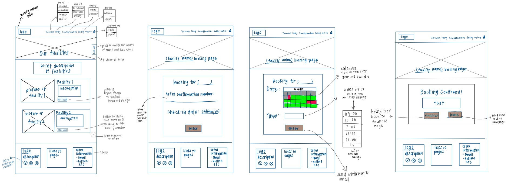

Le Timeless Trésor
Project Scope/Client's Problem
Task: To design and develop an intuitive hotel web user interface as a team using HTML, CSS and JavaScript
Your Role & Solution
Created: Facilities and Services pages, and Facility booking forms
Your Work Process
Planning:
Firstly, we decided on a Luxury Vintage Hotel Website.
My team and I found some competitors to our hotel and did an analysis to find out what features made it good and what could be better to make our website comparable to theirs. We identified Marina Bay Sands and the Shangri-La Resort as prime competitors.
We noted that they used sophisticated and consistent colour schemes, and sufficient whitespaces to display a modern and classy look.
We proceeded to conduct a survey to see what users expect from our website, considering our vintage theme. With their responses, we created a color palette for our website

With our structure settled, I could do my pen and paper prototype to invision what I would like my final website to look like.

Coding:
We created a Git respository and added each other as contributors so that we could all collaborate on the same file. I coded the website on Atom. I also added comments so it's easier
Outcome & Results Achieved
Website LinkIs Singapore is a good place to live in?

Project Scope/Client's Problem
Task: A project where my teammates and I used statistical methods to verify or disprove our created hypothesis and sub-hypothesis
Hypothesis: Singapore is a good place to live in
Your Role & Solution
Justify My sub-hypthesis: Singapore has the best healthcare
Your Work Process
Firstly, we crafted survey questions about our sub-hypothesis and gathered 120 responses from various age groups.
I found secondary datasets that influenced my sub-hypothesis. I focused my research on 3 aspects: Affordability, Efficiency, and Life Expectancy.
Using my statistical research methods skills learnt, I used hypothesis testing(z-test), confidence interval and regression to analyse the datasets including my survey results.

After getting a conclusion from my analysis, I had to craft a report to explain my discovery. I found evidences that showed the relationship between the aspects I found and how it affects my sub-hypothesis.
For example, to explain why I've chosen life expectancy as an affecting factor. I found out that a good healthcare system will have more healthcare facilities, more highly skilled healthcare
workers that can treat patients more efficiently, and more up to date resources so that they can readily treat patients, regardless of the complexity of treatment, prolonging
their residents' life expectancy. And therefore, life expectancy was used as a measure of healthcare quality.
Outcome & Results Achieved
Finally, with all the analysis of my data, I could derive a conclusion. I was able to justify my sub-hypothesis that Singapore had a . After each of us were done with our portion, we gave an overall conclusion on our overarching hypothesis.
Report PDFSingapore is a good place to live in
Project Scope/Client's Problem
Task: To use data visualisation tools and techniques to visualise data insights, trends, patterns and relationships in business data and support our hypothesis